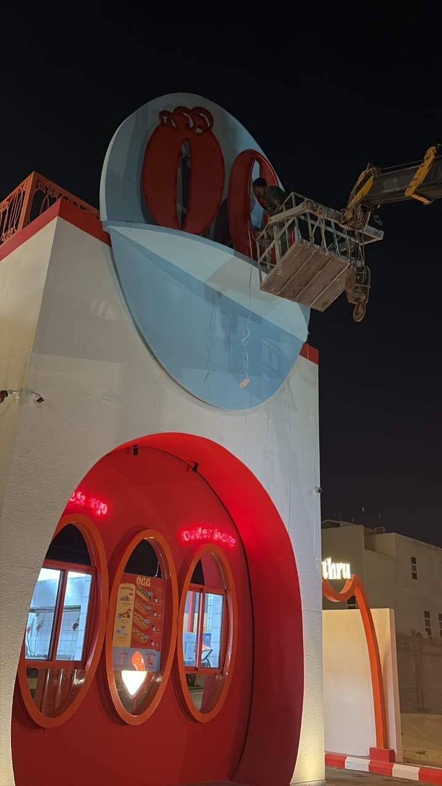
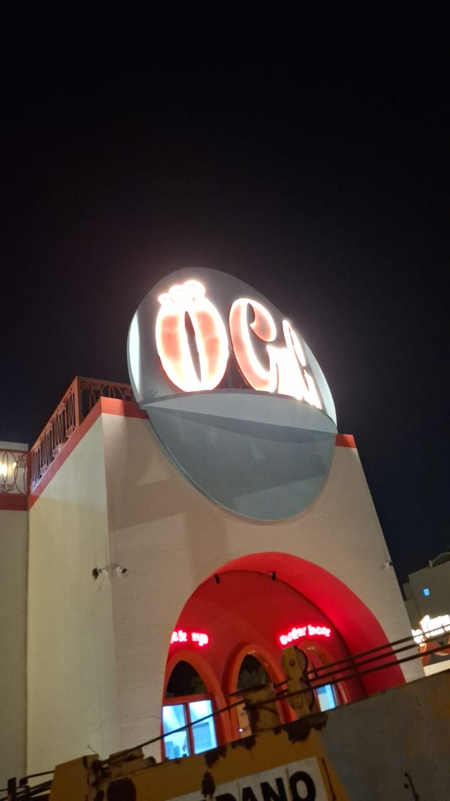

المُعِدّ: مدير التشغيلالفرع: Oggالفترة: الأحد 1 – الثلاثاء 3 نوفمبر
8منجز
2قيد المعالجة
3مجدول
1ملف يحتاج معالجة
ملخص الفترة
تركّز العمل خلال الفترة على تحديث الوثائق الحكومية للفرع: طُبع السجل التجاري ورخصة البلدية لخدمة التوصيل، وبدأ تجديد وثيقة "واثق". تم الاتفاق مع نوف على زيارة الإدارة بخصوص الشهادات الصحية التي فيها عدة مشاكل، وعلى جولة تشمل كل الفروع لمراجعة المستندات. وعُقد اجتماع مع شركة كلوب لخدمة الطلبات المحلية لفرع Ogg والتنفيذ جارٍ، وتم التواصل مع عدة موردين للعبة السكويشي والبالونات. وأكدت شركة مكافحة الحشرات رش الفرع يوم الخميس 5 نوفمبر، إلى جانب تركيب مصائد القوارض حول الفرع. وتمت صيانة إنارة لوحة الفرع ومكينة الآيس كريم.
الوثائق والتراخيص الحكومية
طباعة السجل التجاريمنجز
طباعة رخصة البلدية لخدمة التوصيل للمنازلمنجز
تجديد وثيقة "واثق"قيد المعالجةالطلب تحت المعالجة، وننتظر صدور التجديد.
جولة على جميع الفروع لتحديث المستنداتمجدولتم الاتفاق مع نوف على زيارة كل الفروع، وتحديث المستندات كاملة، ومراجعة جميع الوثائق الحكومية. لم تُنفّذ بعد.
الشهادات الصحية
توجد عدة مشاكل في الشهادات الصحية
تمت مناقشتها مع نوف، وتقرر رفعها للإدارة في زيارة يوم الثلاثاء.
زيارة الإدارة يوم الثلاثاء لمعالجة الشهادات الصحيةمجدول
السلامة الصحية ومكافحة الآفات
رش الفرع من الحشراتالخميس 5 نوفمبرردّت شركة مكافحة الحشرات وأكدت موعد الرش.
صناديق طُعم ولواصق للفئران حول الفرعتم الطلبطلب تركيب صناديق طُعم خارج الفرع ومن حوله، فيها طُعم حلاوة ولواصق للفئران.
صيانة الفرع
صيانة إنارة لوحة OGG الخارجيةمنجزتمت الصيانة برافعة، واللوحة مضيئة بالكامل.
صيانة مكينة الآيس كريممنجز

أثناء الصيانة · اللوحة مطفية والفني على الرافعة

بعد الصيانة · اللوحة تشتغل بالكامل
الطلبات المحلية والتوصيل قيد التنفيذ
اجتماع مع شركة كلوب للطلبات المحلية لفرع Oggجارٍ التنفيذالأستاذ يوسف · تم الاجتماع، والتنفيذ جارٍ.
المشتريات والموردين
التواصل مع عدة موردين للعبة السكويشي والبالوناتمنجزجمع العروض من أكثر من مورد للمقارنة.
مستلزمات الفرع
توفير دبل فيس للفرعمنجز
توفير ورق الطباعة الحراري للفرعمنجز
التنسيق والتواصل
التنسيق مع نوفمنجزتم الاتفاق على زيارة الإدارة بخصوص الشهادات الصحية، وعلى جولة تشمل جميع الفروع لتحديث المستندات.
متابعات قادمة نقلناها من اليوم
زيارة الإدارة يوم الثلاثاء ومعالجة مشاكل الشهادات الصحية · مع نوف
تحديد موعد الجولة على الفروع، وتجهيز قائمة المستندات المطلوب مراجعتها · مع نوف
متابعة صدور تجديد "واثق"
الخميس 5 نوفمبر: حضور رش الفرع، والتأكد من تركيب صناديق الطُّعم واللواصق · شركة مكافحة الحشرات
متابعة نتائج الاجتماع مع شركة كلوب وخطوات تفعيل الطلبات المحلية لفرع Ogg
مقارنة عروض موردي السكويشي والبالونات واختيار الأنسب